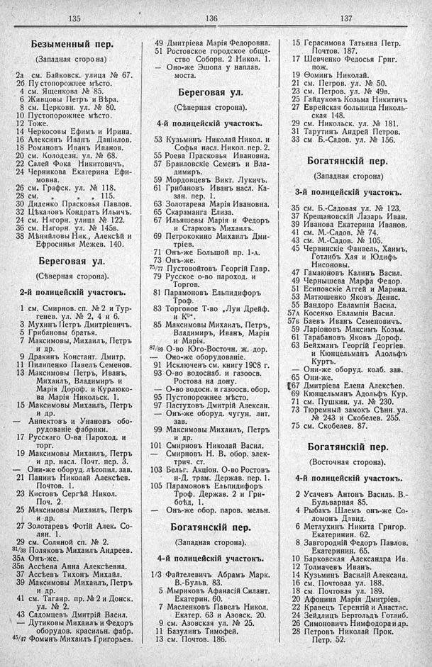

Лист источника 177
Скан

Распознанный текст
135
Безыменный пер.
(Западная сторона)
2а см. Байковск. улица № 67.
2б Пустопорожнее мѣсто.
4 см. Ященкова № 85.
6 Живцовы Петръ и Вѣра.
8 см. Церковн. ул. № 80.
10 Пустопорожнее мѣсто.
12 Тоже.
14 Черкосовы Ефимъ и Ирина.
16 Алексинъ Иванъ Даніилов.
18 Романовъ Иванъ Иванов.
20 см. Колодсзн. ул. № 68.
22 Салей Фока Никитовичъ.
24 Черникова Екатерина Ефи-
мовна.
26 см. Графск. ул. № 118.
28 см. ” ” 115.
30 Диденко Прасковья Павлов.
32 Цѣкаловъ Кондратъ Ильичъ.
24 см. Нагорн. улица № 122.
36 см. Нагорн. ул. № 145б.
38 Мѣняйловы Ник., Алексѣй и
Ефросинья Межев. 140.
Береговая ул.
(Сѣверная сторона).
2-й полицейскій участокъ.
1 см. Смирнов. сп. № 2 и Тур-
генев. ул. № 2, 4 и 6.
3 Мухинъ Петръ Дмитріевичъ.
5 Грибановы братья.
7 Максимовы, Михаилъ, Петръ
и др.
9 Дракинъ Констант. Дмитр.
11 Пилипенко Павелъ Семенов.
13 Максимовы Петръ, Иванъ,
Михаилъ, Владимиръ и
Марія Дороф. и Курлюко-
ва Марія Никольск. 1.
15 Максимовы Михаилъ, Петръ
и др.
— Анпектовъ и Унановъ обо-
рудованіе фабрики.
17 Русскаго О-ва Пароход. и
торг.
19 Максимовы Михаилъ, Петръ
и др. насл. Почт. пер. 3.
— Они-же оборуд. лѣсопил. зав.
21 Панинъ Николай Алексѣев.
Почтов. 1.
23 Кистовъ Сергѣй Никол.
Поч. 2.
25 Максимовы Михаилъ, Петръ
и др.
27 Золотаревъ Фотій Алек. Со-
лян. 1.
29 см. Соляной сп. № 2.
31/33 Поляковъ Михаилъ Андреев.
35а Онъ-же.
35б Ассѣева Анна Алексѣевна.
37 Ассѣевъ Тихонъ Михайл.
39 Максимовы Михаилъ, Петръ
и др.
41 см. Таганр. пр. № 2 и Донск.
ул. № 2.
43 Садомцевъ Дмитрій Васил.
— Дутиковы Михаилъ и Федоръ
оборудов. красильн. фабр.
45/47 Фоминъ Михаилъ Григорьев.
136
49 Дмитріева Марія Федоровна.
51 Ростовское городское обще-
ство Соборн. 2 Никол. 1.
— Оно-же Эшопа у наплав.
моста.
Береговая ул.
(Сѣверная сторона).
4-й полицейскій участокъ.
53 Кузьминъ Николай Никол. и
Софья насл. Никол. пер. 2.
55 Роева Прасковья Ивановна.
57 Браиловскіе Семенъ и Вла-
димиръ.
59 Мордовцевъ Викт. Лукичъ.
61 Грибановъ Иванъ насл. Ка-
зан. пер. 1.
63 Золотарева Марія Ивановна.
65 Скараманга Елиза.
67 Ильяшевы Марія и Федоръ
и Старковъ Михаилъ.
69 Петрококино Михаилъ Дми-
тріев.
71 Онъ-же Большой пр. 1-а.
73 Онъ-же.
75/77 Пустовойтовъ Георгій Гавр.
79 Русское о-во пароход. и
Торгов.
81 Парамоновъ Ельпидифоръ
Троф.
83 Торговое Т-во „Луи Дрейф.
и К⁰“.
85 Максимовы Михаилъ, Петръ,
Владимиръ, Иванъ, Марія
и Марія.
87/89 О-во Юго-Восточн. ж. дор.
— Оно-же оборудованіе.
91 Исключенъ см. книгу 1908 г.
93 О-во водоснаб. и газоосв.
Ростова на дону.
— О-во водосн. и газоосв. обор.
95 Пустопорожнее мѣсто.
97 Пастуховъ Дмитрій Алексан.
— Онъ-же оборуд. чугун. лит.
зав.
99 Максимовы Михаилъ, Петръ
и др.
101 Смирновъ Николай Васил.
— Смирновъ Н. В. обор. элек-
трич. ст.
103 Бельг. Акціон. О-во Ростовъ
н-Д. трам. Держав. пер. 1.
105 Парамоновъ Ельпидифоръ
Троф. Держав. 2 и Гри-
боѣд. 1.
— Онъ-же обор. паров. мельн.
Богатянскій пер.
(Западная сторона).
4-й полицейскій участокъ.
1/3 Файтелевичъ Абрамъ Марк.
В.-Бульв. 83.
5 Мыриковъ Афанасій Силант.
Екатерин. 60.
7 Масленковъ Павелъ Никол.
Екатер. 63 и Азовск. 20.
9 см. Азовская ул. № 25.
11 Базулинъ Тимофей.
13 см. Почтов. 186.
137
15 Герасимова Татьяна Петр.
Почтов. 187.
17 Шевченко Федосья Григ.
пож.
19 Ѳоминъ Николай.
21 см. Петров. ул. № 50.
23 см. Петров. ул. № 49в.
25 Гайдуковъ Козьма Никитичъ
27 Еврейская больница Николь-
ская 148.
29 см. Никольск. ул. № 181.
31 Тарутинъ Андрей Петров.
33 см. Б.-Садов. ул. № 156.
Богатянскій пер.
(Западная сторона)
3-й полицейскій участокъ.
35 см. Б.-Садовая ул. № 123.
37 Крещановскій Лазарь Иван.
39 Иванова Екатерина Иванов.
41 см. М.-Садов. № 74.
43 см. М.-Садов. № 105.
45 Червинскіе Фаивель, Хаимъ,
Готлибъ Хая и Юдифь
Нисоновы.
47 Гамаюновъ Калинъ Васил.
49 Чернышева Марфа Федор.
51 Есиповскіе Аггей и Марина.
53 Матюшенко Яковъ Денис.
55 Вандоро Евлампія Васил.
57а Косенко Евлампія Васил.
57б Баевъ Иванъ Семеновичъ.
59 Ларіоновъ Максимъ Козьм.
61 Тарабановъ Яковъ Дороф.
63 Бейхманъ Георгій Георгіев.
и Кюнцельманъ Адольфъ
Куртъ.
— Они-же оборуд. колб. зав.
65 Они-же.
[67 Дмитріева Елена Алексѣев.
69 Кюнцельманъ Адольфъ Кур.
71 см. Пушкин. ул. № 230.
73 Тюремный замокъ Сѣнн. ул.
№ 243 и Скобелев. 255.
75 см. Скобелев. 87.
Богатянскій пер.
(Восточная сторона).
4-й полицейскій участокъ.
2 Усачевъ Антонъ Василь. В.-
Бульварная 85.
4 Рыбакъ Шлемъ онъ-же Со-
ломонъ Давид.
6 Метлухинъ Никита Григор.
Екатеринин. 62.
8 Завгородній Федоръ Павлов.
Екатеринин. 65.
10 Барковская Александра Ив.
12 Толмачевъ Иванъ.
14 Кузьминъ Василій Александ.
16 см. Почтовая ул. 188.
18 см. Почтовая ул. 189.
20 Афонина Марія Дмитріев.
22 Кравецъ Терентій и Анастас.
24 Зейдлицъ Бертольдъ Готлиб.
26 Симоновичъ Нимфодора и др.
28 Петровъ Николай Прок.
Петр. 52.